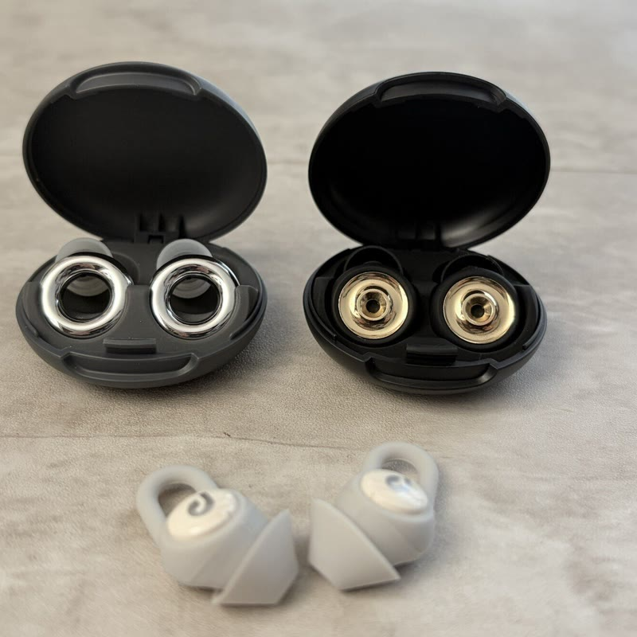

A ／ 刻印
4.5room
等幅を字間0.30emまで開く。鏡胴やボディの刻印の組み方。いちばん静かで、機材寄り。
inliving から借りていた装置（角丸カード・ピル・英字上の二段ナビ）を外して、性格をロゴと書体に移す案です。 写真はインスタント寄りの額装を1案入れました。数値は実測に基づいています。どれを軸にするか決めてください。
Bだけ考え方が違います。4.5 をレンズの絞り値（f/4.5）として読ませる案で、チャンネル名がそのまま撮影データの一部になります。 参考にした8サイトで、輪郭と塗りを混植したロゴは1件もありませんでした（全て単色ベタ）。前に作った混植ロゴはやめる前提です。
A ／ 刻印
等幅を字間0.30emまで開く。鏡胴やボディの刻印の組み方。いちばん静かで、機材寄り。
B ／ 絞り値
4.5 を f値として立てる。数字が主役になり、他の3案より覚えやすい。写真のキャプションと地続きになる。
C ／ コンデンス
背の高い凝縮体。強いが、太いぶん「可愛い」から遠い。見出しにも同じ書体を回せる。
D ／ 混植
いまの形に近い。欧文だけ別書体に落ちるスタックで組む。無難だが性格は弱い。
和文はヒラギノのまま、欧文だけ差し替えるスタック1本で組みます（GR official・IMA ONLINE と同じ実装）。 欧文ラベルの字間は 0.05em、ロゴとボタンだけ 0.1em。見出しは太らせず、本文の行送りを広く取ります。
1 ／ 等幅（PT Mono）
読書かばん その２
動画で紹介して、そのまま日常に残ったものだけ。
2026.05.17 ／ ZV-1 ／ F1.8 ／ ISO 400
記録・計器に寄る。数字が全部そろう。いちばん「カメラ感」が出る。
2 ／ Lato
読書かばん その２
動画で紹介して、そのまま日常に残ったものだけ。
2026.05.17 ／ ZV-1 ／ F1.8 ／ ISO 400
柔らかいヒューマニスト。読みやすいが機材感は薄い。可愛い側に寄せるならこれ。
3 ／ コンデンス
読書かばん その２
動画で紹介して、そのまま日常に残ったものだけ。
2026.05.17 ／ ZV-1 ／ F1.8 ／ ISO 400
見出しが締まる。雑誌寄り。和文と並べたとき欧文だけ背が高くなるのが好みの分かれ目。
参考 ／ 実測
機材系サイトは例外なくウェイト300〜400で通し、純黒と純白を避け、グレーを3段で運用していました。 見出しは本文の1.3〜2.2倍まで。太らせるのではなく本文の行送り（1.65〜1.8）を広げるほうが「記録っぽさ」に効きます。 instax.jp だけが逆で、weight 600・純黒・純白。これが「可愛い」側の作り方です。
P1 はご要望のインスタント寄り。instax の実寸比（画面部62mm・上5mm・下19mm＝下は上の3.8倍）をそのままCSSにしています。 粒子は SVG で足していて、写真そのものには filter を一切掛けていません。 P2 は参考にした写真文化系8サイト（Leica・Polaroid・GR・IMAなど）の実装で、 全サイトが角丸0・フィルタなし・断ち落としでした。インスタント風のマウントを使っていたサイトは Polaroid 公式を含めて0件です。
P1 ／ インスタント

マウント＋粒子＋余白のキャプション＋傾き−1°。写真は無加工のまま。傾きは±1.5°が上限で、−4°は散らかって見えました。
P2 ／ 記録
2026.05.16 ／ ZV-1 ／ F1.8 ／ ISO 400
角丸0・断ち落とし・写真直下に撮影データ（12px / 行送り1.5 / #555 / 直下10px）。機材系サイトの型そのまま。
P1 ／ 製品カットに当てた場合

正方形でも比率は同じ（下は上の3.8倍）。ただし製品カットは色と質感が判断材料なので、粒子は控えめにするか外すのが妥当だと思います。
P2 ／ 製品カットに当てた場合
2026.06 —
製品を正直に見せる方針とは、こちらのほうが素直に噛み合います。
いま自前ホストしている General Sans は OFL ではなく ITF Free Font License で、
ライセンス §02 が「公開サーバへのアップロード」と「フォントサービング目的のネット送信」を禁止しています。
ITF が想定する Web 利用は Fontshare API（外部CDN）経由だけで、このサイトの「外部CDN禁止・自前ホスト」方針とは両立しません。
現状はグレーというより黒に近いので、差し替えるのが安全です。
このシートで使っている PT Mono / PT Sans Narrow は、埋め込みライセンス文が
「placing on Web servers for free downloading」を名指しで許可していて（fsType 0）、自前ホストできます。
Lato は SIL OFL 1.1 です。3つともこのMacに入っているので、追加のダウンロードなしで試せます。
もうひとつ。General Sans には tnum（等幅数字）が無く数字の幅もバラバラなので、
サイト中の font-variant-numeric: tabular-nums はいま一切効いていません。桁が揃っていないのはこれが原因です。
PT Mono に替えれば等幅なので自然に揃います。